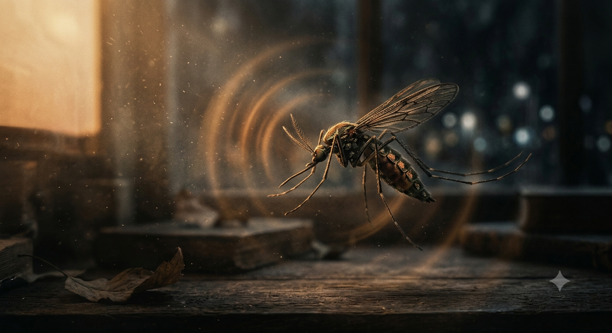

Uma armadilha que simula um hospedeiro ideal
A MosquiTrap foi projetada para reproduzir os principais estímulos utilizados pelas muriçocas para localizar um hospedeiro.
Em vez de utilizar produtos químicos, o sistema combina emissão controlada de dióxido de carbono, calor e iluminação para simular as condições encontradas em um mamífero, conduzindo os insetos naturalmente até a armadilha.

Estímulos de Atração
Clique em cada um dos fatores abaixo para entender como a armadilha atrai os insetos de forma ecológica:
A armadilha libera pequenas quantidades de dióxido de carbono para simular a respiração de um mamífero. Esse é um dos principais sinais utilizados pelas muriçocas para localizar um hospedeiro.
Um sistema de aquecimento mantém a superfície da armadilha em temperatura semelhante à de um corpo vivo, aumentando sua capacidade de atração.
A iluminação em LED auxilia na orientação visual das muriçocas, conduzindo-as até o interior da armadilha, onde são capturadas.